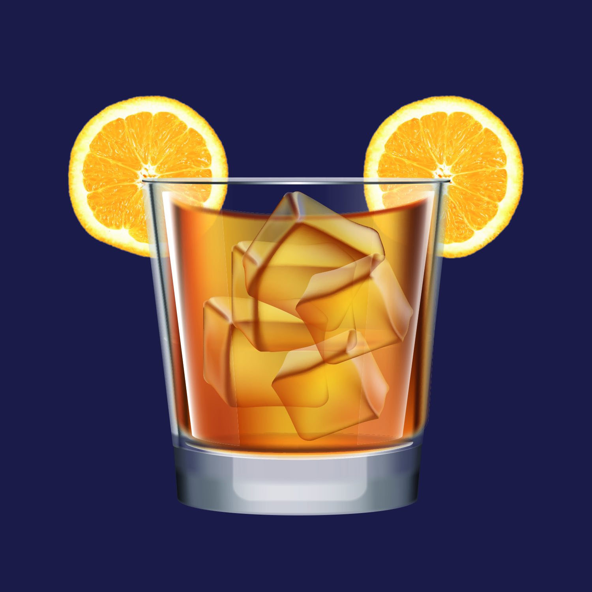

Ecco i migliori bar per adulti a Walt Disney World!

By Valentina
23 Aprile 2021
Immagine di disneyparks.com
Chi l’ha detto che Disney World è solo per famiglie con bambini? Una vacanza solo-adulti è altrettanto divertente (se non di più!). Disney World, proprio come Disneyland, è infatti stato pensato come luogo assolutamente per tutti. Una delle campagne pubblicitarie più iconiche di Disneyland, per esempio, era pensata per promuovere Date Nights (appuntamenti galanti) a Disneyland. Questa tendenza a creare esperienze davvero per tutti è ancora molto forte e l’offerta di intrattenimento per “Adults Only” a WDW è sicuramente qualcosa da conoscere.
Se siete tra i temerari che hanno ancora energie dopo un’intera giornata nei parchi, ecco la mia personalissima lista di bar “Adults Only” che mi sono ripromessa di provare durante la mia prossima vacanza a Walt Disney World!
Trader Sam’s Grog Grotto
Immagine di disneyparks.com
Il bar delle vacanze per eccellenza: fatevi trasportare su un’isola polinesiana e rilassatevi sorseggiando i migliori cocktail locali da Trader Sam’s Grog Grotto, il bar del Polynesian Resort.
Riservato esclusivamente ai maggiori di 21 anni dopo le 20 (durante il giorno, invece, anche i bambini sono benvenuti), in questo bar, i tavoli sono assegnati “first come, first serve”, ovvero non c’è modo di prenotare: se trovate un tavolo libero (o sgabelli liberi al bar) potrete sedervi, altrimenti dovrete aspettare il vostro turno. Gli esperti di WDW promettono che l’attesa vale la pena.
La cosa particolare di questo bar è che l’ambiente cambia a seconda dei cocktail che vengono ordinati al bar: un vulcano erutta, la divinità locale si arrabbia e molto altro di inaspettato succede attorno agli ignari avventori... Insomma, anche in questo posto la magia della Disney non manca e tra colpi di scena e buoni cocktails, è sicuramente un posto memorabile in cui passare qualche ora di relax.
PS: Sapete chi è questo Trader Sam? È uno dei personaggi della vecchia storyline della Jungle Cruise!
AbracadaBar
No, non è un errore di battitura, il nome e l’esperienza di questo bar sono davvero tutte incentrati sulla magia. Situato al BoardWalk Resort (ma accessibile a tutti!), immaginate cocktails che cambiano colore se agitati, effetti speciali nei vari locali del bar e molto altro…
La back story di questo locale è come sempre ben curata, in stile Disney: si tratta di uno storico bar degli anni ‘40 in cui maghi e prestigiatori si incontravano dopo i loro spettacoli serali e cercavano di impressionare l’un l’altro con effetti speciali, tirando a far mattina, finchè lo stesso bar fu fatto sparire...fino ad oggi: il bar è riapparso ed è pronto a ricevere ospiti! Il bar è decorato con oggetti magici come camicie di forza e bacchette magiche, specchi con strani riflessi e poster di vecchi spettacoli di magia.
The Edison
Di questo locale ve ne ho già parlato nell’articolo dedicato a Disney Springs, andate a dare un’occhiata al bellissimo video di questo locale!
Jock Lindsey’s Hangar Bar
Immagine di disneyparks.com
Se siete fan di Indiana Jones, e anche bevitori, non potete assolutamente perdervi questo bar. Il locale prende il nome dall’intrepido pilota di Indiana Jones che, proprio nel suo hangar, ha deciso di aprire un bar proprio nel suo hangar!
Chiaramente cibo e drinks sono ispirati alla saga di Indiana Jones, con piatti dal nome “Snakebit Sliders”, mini-burgers serviti con confettura di pomodoro e bacon, “Air Pirate’s Pretzels”, i classici pretzel in chiave pirata. Insomma, se siete pronti per una serata tra adulti senza rinunciare ad un’atmosfera ben tematizzata, Jock Lidnsey è il posto per voi. Questo locale si trova a Disney Springs, proprio come il The Edison.
Se questo episodio è stato interessante, non dimenticarti di seguirci sul podcast “Aperitivo a Main Street, U.S.A.”, disponibile su Spotify, Anchor e tutte le altre maggiori piattaforme audio!